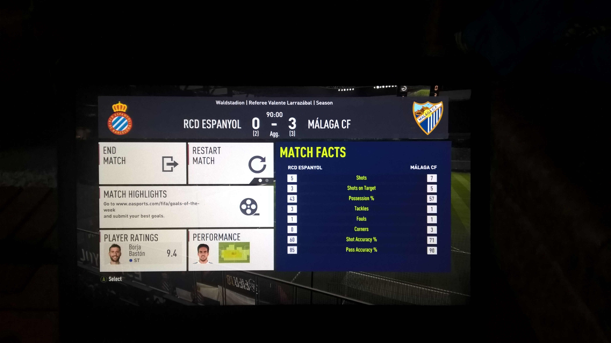
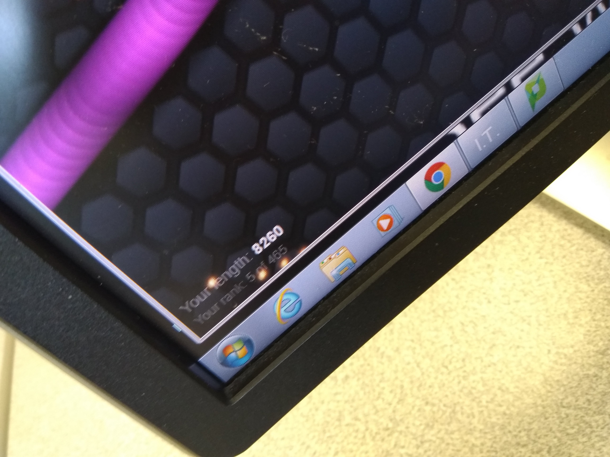

MY 3 BEST PROJECTS
this is my last sem project which i made,i was having no idea css file was gone 500 lines .yup i wrote it all
well its not that great number but for me as newbie it was muhc special. just me and notepad++ moment haha,
my PROJECT
this is my second best achievement
it was 0-2 on first leg of my game, i was playing malaga fc,and my firend was playing rcd espanyol
i come back on second leg winning 3-0 total as 3-2,with a last min goal

this is my third achievement
well i am right handed person,and i made till 5th with my left hand
